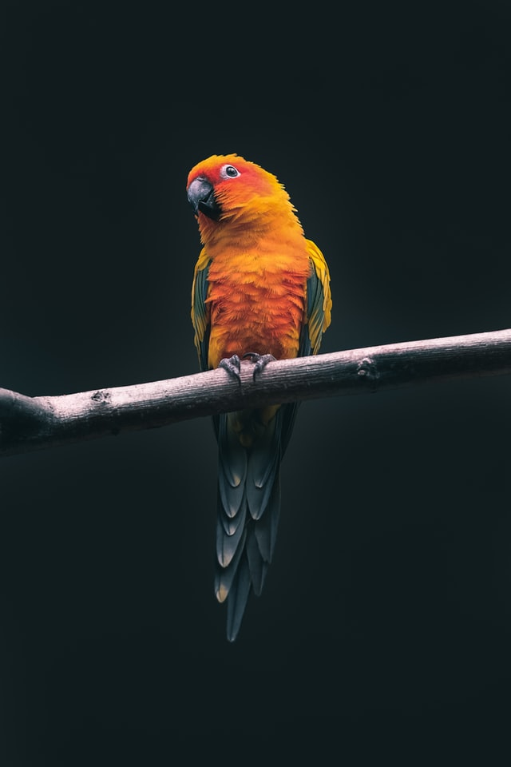
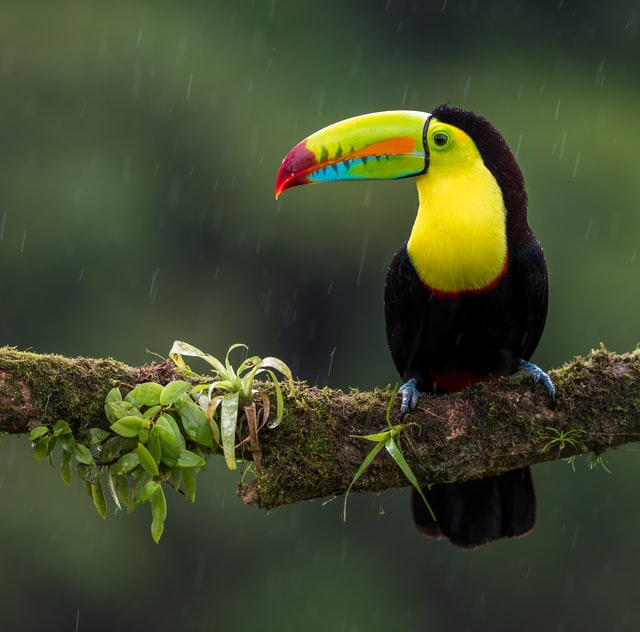
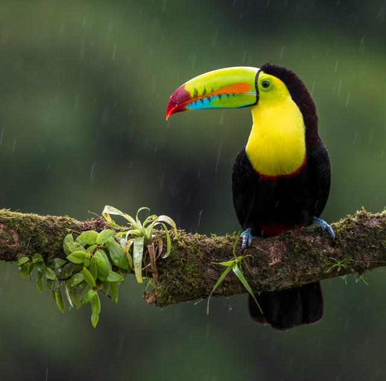

Welcome
Birdwatching, or birding, is a form of wildlife observation in which the observation of birds is a recreational activity or citizen science. It can be done with the naked eye, through a visual enhancement device like binoculars and telescopes, by listening for bird sounds, or by watching public webcams.
Birdwatching, or birding, is a form of wildlife observation in which the observation of birds is a recreational activity or citizen science. It can be done with the naked eye, through a visual enhancement device like binoculars and telescopes, by listening for bird sounds, or by watching public webcams.
Favourite Photos


 
